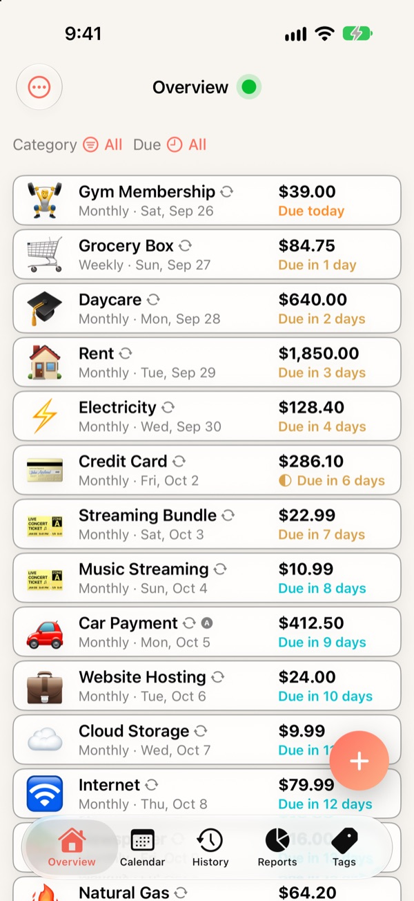
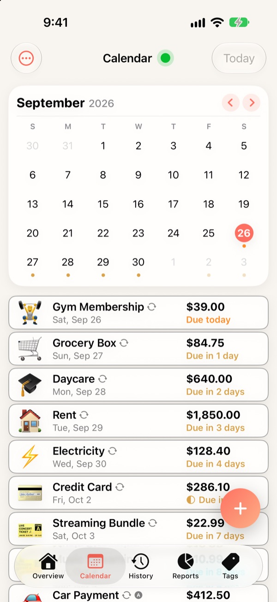
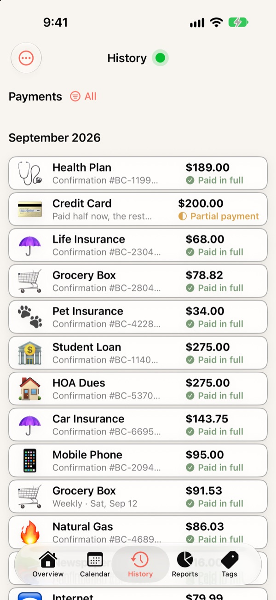
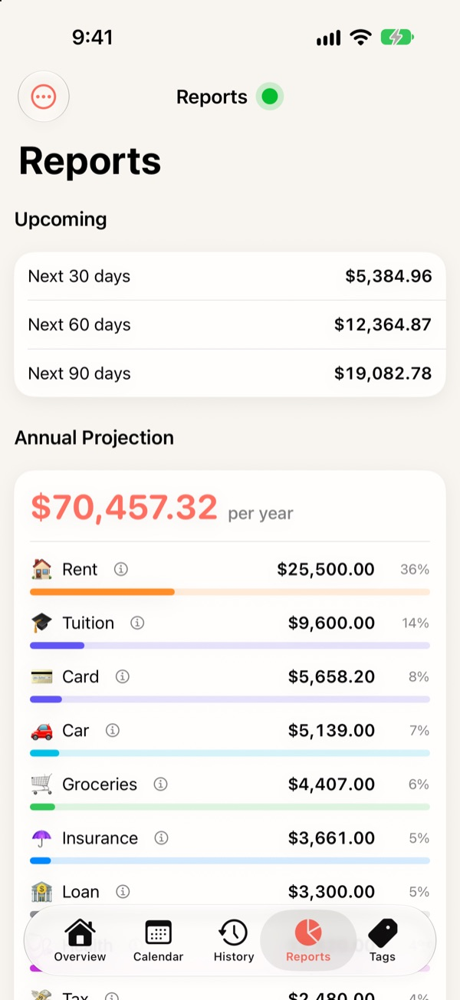
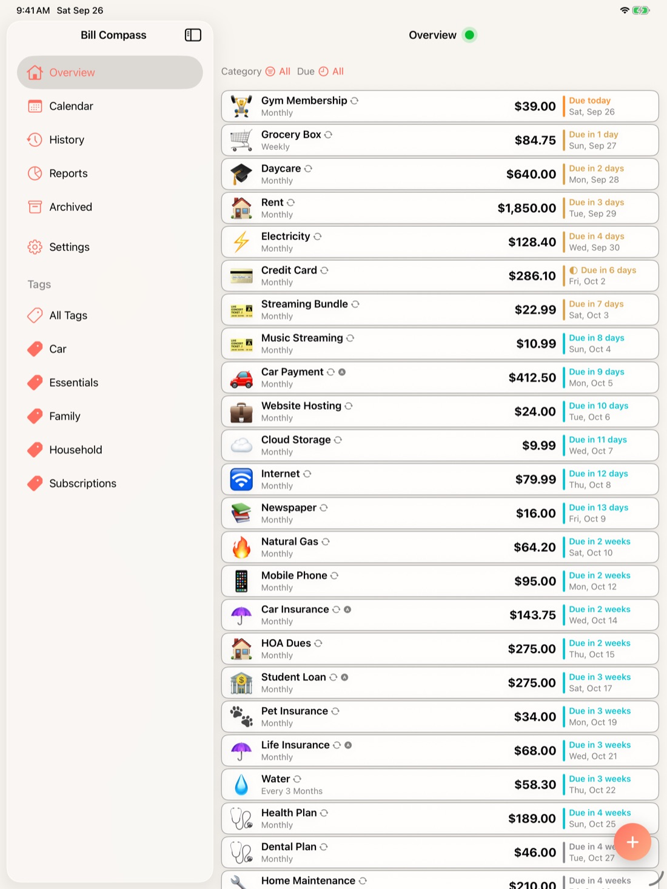
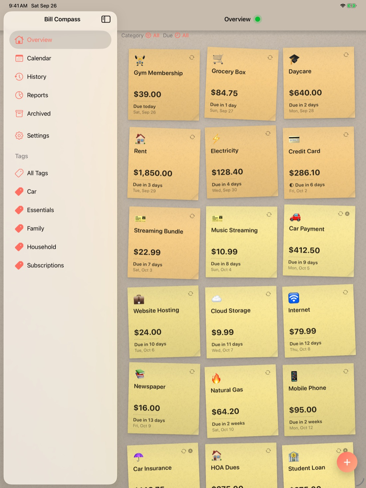
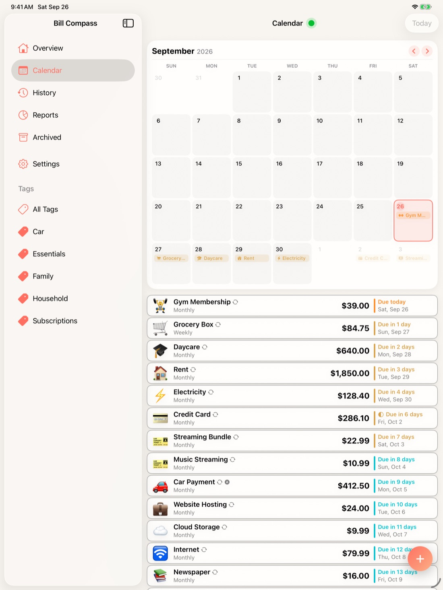

A tour of every screen. For step-by-step instructions, see How to Use.
Every bill you are tracking, in due-date order, with its amount and a plain countdown: Due today, Due in 3 days, Overdue. The colour of the countdown tells you how close it is, from red for late through amber to teal for comfortably far off.
Two filters narrow the list: Category, and Due — Overdue, Current Month, or the next 30, 60 or 90 days. A half-filled circle marks a bill you have part paid.
The dot beside the page title is the one-glance verdict: green when nothing is late, amber at one or two overdue bills, red beyond that.


The month laid out by date, with a mark on every day that has a bill due. Pick a day and the list beneath opens at it, so you can read ahead from any point in the month. Today brings you back.
On iPad and Mac the calendar is large enough to name each bill on its day.
The Calendar shows only what is still owed. Once a bill is paid, its record lives in History.
Every payment you have recorded, newest first and grouped by month. Each one says whether it was paid in full, a partial payment, or a skipped cycle, with the confirmation number or note you gave it.
Filter to a single bill to see its whole record. Open a payment to read it, correct it, or delete it.


Upcoming adds up what falls due in the next 30, 60 and 90 days.
Annual Projection is what a year of your recurring bills comes to, broken down by category. Bills whose amount varies are averaged from what you have actually paid, so they only count once they have a payment recorded.
Paid This Year is the other half: what has actually gone out since January 1, bill by bill, with how many payments and when the last one was.
A notification before each bill is due — on the day, 1 day, 3 days, 1 week or 2 weeks before — at a time of day you choose. Each bill keeps its own lead time, so the rent can warn you a week out while a streaming service warns you on the day. You can also ask for a second reminder on the due date itself.
The app icon carries a badge counting the bills that are due or overdue.
Reminders are scheduled on your device. Nothing is sent to a server to make them appear, and they keep working offline.
Mark a direct debit or card-on-file bill Recorded Automatically and, on its due date, Bill Compass records the payment for you and moves the bill to its next date — the same as recording it by hand. Its reminder asks for the one thing that can still go wrong: that enough money is in the account.
A cycle with no amount yet — an electricity bill whose statement has not arrived — waits for you instead of being recorded as $0.00.
Choose how the Overview arranges your bills in Settings → Appearance → Bill Layout: Tile, a list of rows; Grid, cards side by side; or Stickie, a board of paper notes. The iPhone keeps the list, which suits its width best.


